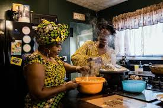
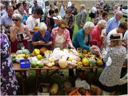

United States
Celebrated on the fourth Thursday of November. Families gather for large meals, watch parades and football, and often volunteer in communities.
Celebrated on the fourth Thursday of November. Families gather for large meals, watch parades and football, and often volunteer in communities.

Celebrated on the second Monday of October. Families enjoy harvest meals with turkey, pumpkin pies, and giving thanks for a bountiful harvest.
Observed on the first Thursday of November. Brought by freed African Americans, including church services, family meals, and American-style celebrations.

Celebrated in October to mark the U.S.-led invasion anniversary. Includes parades, cultural events, and family meals.

Celebrated on the last Wednesday of November. Includes church services, community feasts, and cultural performances.
